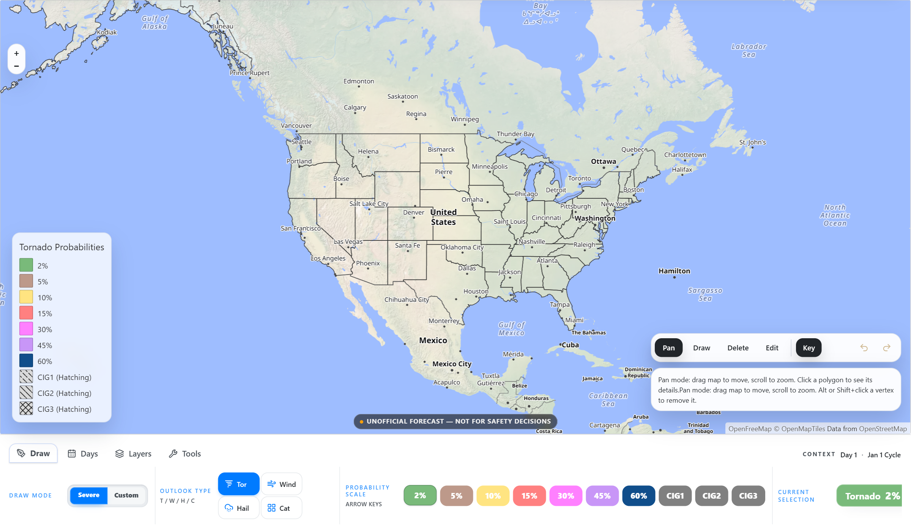
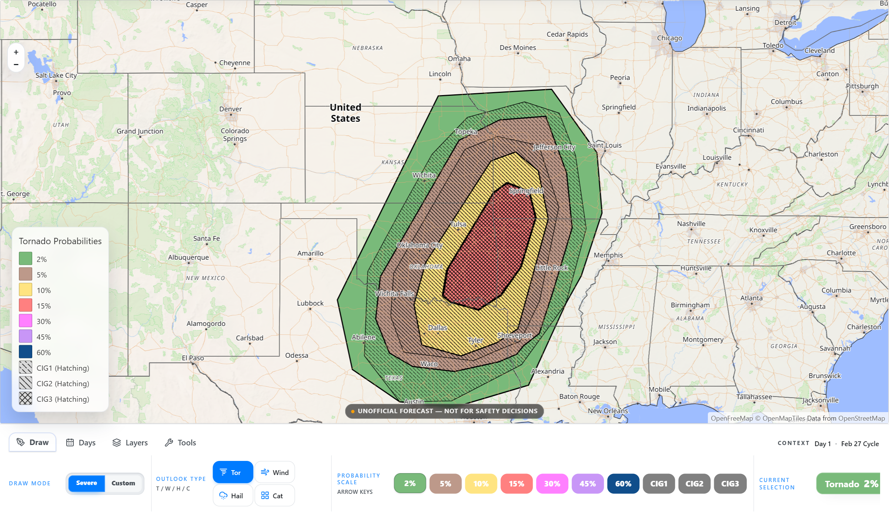
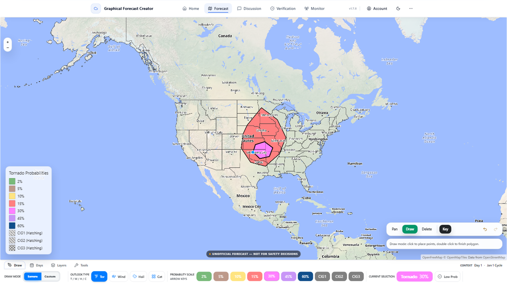
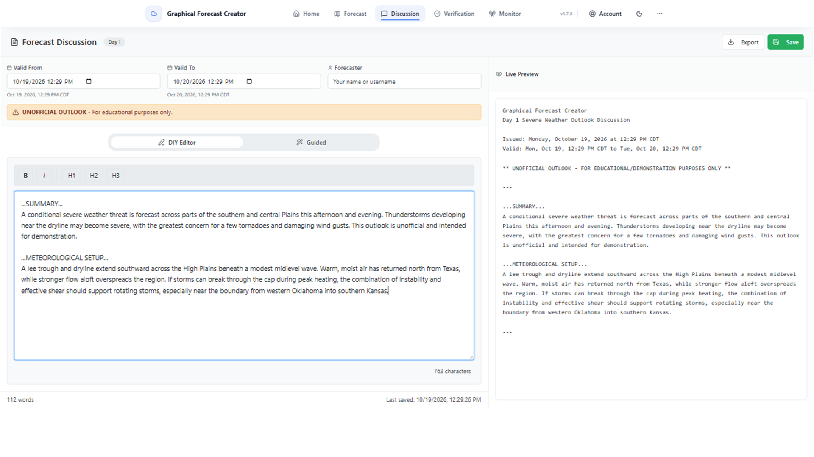
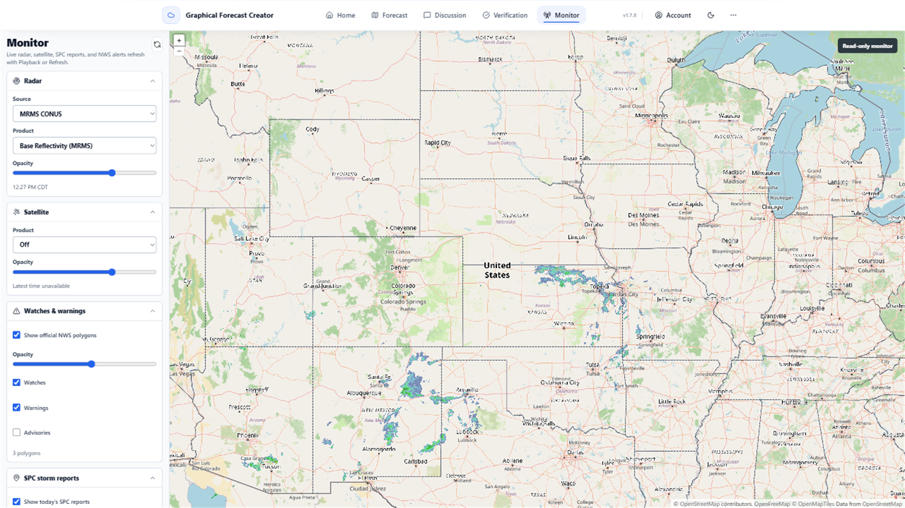
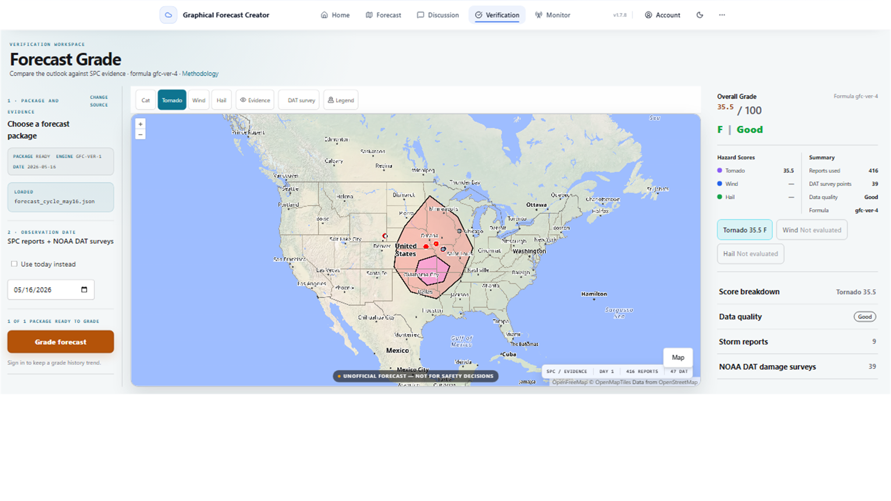
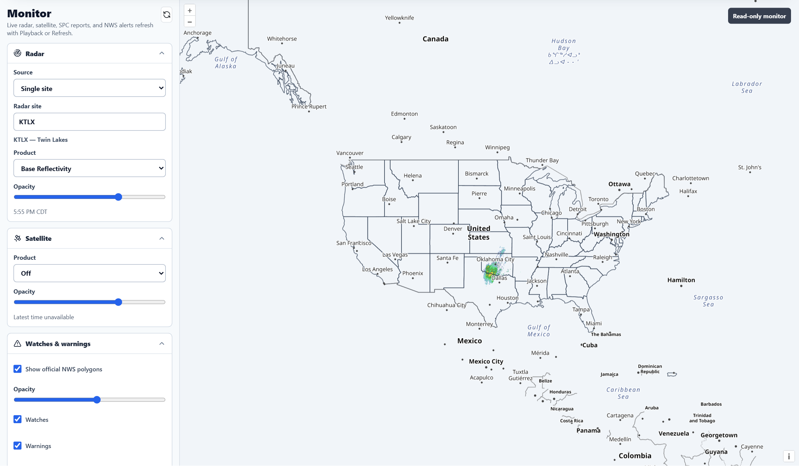
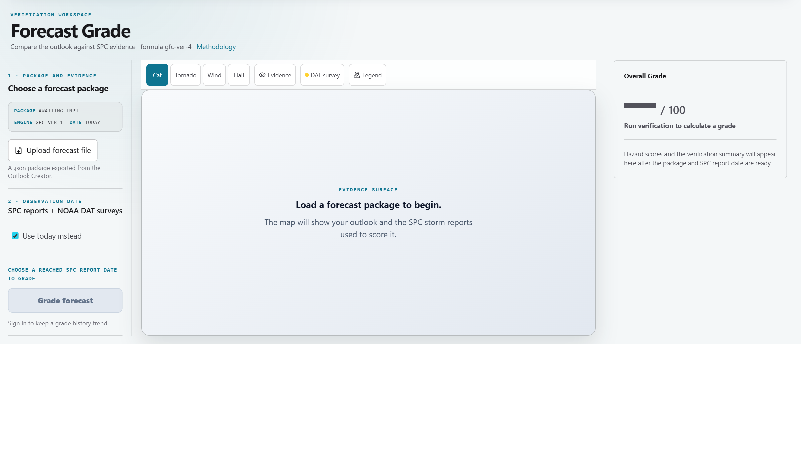
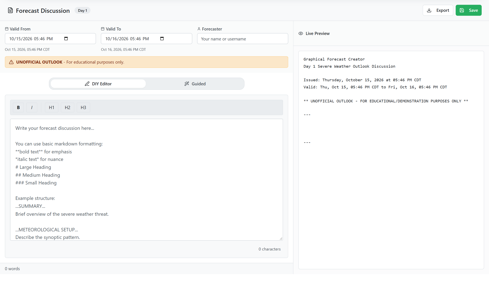

Outlook map
Pan and zoom over a real map, pick a probability level from the scale, and draw the area you expect.
 Graphical Forecast Creator
Graphical Forecast Creator

Draw, share, and verify your own weather forecasts. No expertise required to start, no limits when you're ready.
Accounts unlock features, but you can start without one.


Pick a category, pick an area, and draw the risk you think is coming. Start with something you feel sure about. You can always go bigger later.

Write the story behind the call in your own words. What did the models show, what made you confident, and what would change your mind?

Follow radar, satellite, SPC reports, and NWS alerts against the forecast you made, as the day unfolds.

Compare your call with what happened. Find where you were right, where you missed, and what to try on your next forecast.
Start here — no experience needed. Draw your first forecast in minutes.

Jump in — you already know what you're doing. Draw, verify, discuss.
Real screens from GFC. Swipe, or scroll sideways.

GFC gives you a map, the tools to draw a forecast on it, and a way to watch and score that forecast later. It is built for people who want to practice the craft: students, enthusiasts, and anyone who likes to know how a call turned out.
Draw risk areas on a map. Choose categories, set your confidence, and build the forecast from the ground up.

Write the reasoning behind each forecast. Share it, read others, and compare how different people read the same setup.
Keep radar, satellite, reports, and alerts beside your forecast while the event happens, so you can see the call and the reality together.
Look back at how a forecast held up. Review hits and misses, track trends in your own calls, and see what to adjust next time.
Select a level from the same probability scale the forecast editor uses.
Levels follow the SPC-style scale in the app. It is a tool for your own forecast, not an official product.
GFC began as a tool for drawing SPC-style convective outlooks, using the same categorical risk levels people see on official outlook maps.
It is growing to cover more kinds of weather: severe, winter, and tropical forecasting.
GFC is a tool for enthusiasts to build and check their own forecasts. Forecasts made in GFC are not official products and are not warnings.
For official forecasts and warnings, check your national weather service.
The core tools for drawing, discussing, monitoring, and verifying forecasts are free. Premium is optional and adds extras. It never gates the core tools.
Accounts unlock features, but you can start without one.
Create an account to save your work and unlock features. Or jump straight in and start drawing.